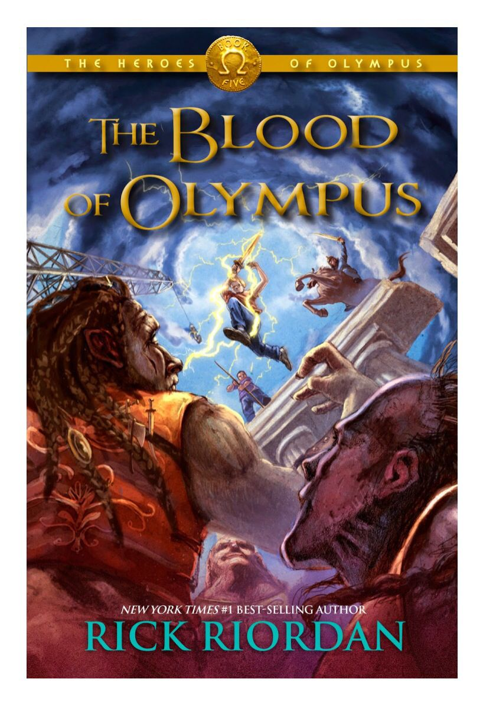

FIC CORNER: The Blood of Olympus by Rick Riordan
Author: XC
Synopsis
"The Blood of Olympus" is the final book of the "Heroes of Olympus" series, written by Rick Riordan. The story revolves around the Greek and Roman crewmembers of the Argo II, who have been on multiple quests to defeat Gaea, the earth's mother. Despite their progress, they seem distant from achieving their goal. Gaea's giants have risen and are mightier than ever, and they need to cease before the Feast of Spes, where Gaea plans to have two demigods sacrificed in Athens. Their blood is crucial as it will allow Gaea to wake up and wreak havoc on the world.
The demigods experience more frequent visions of a terrible battle at Camp Half-Blood, and the Roman legion from Camp Jupiter, led by Octavian, is almost within striking distance. While they contemplate taking the Athena Parthenos to Athens as a secret weapon, the friends realize that it belongs back on Long Island, where it might be able to stop a war between the Greek and Roman camps. As a result, the Athena Parthenos will go west, and the Argo II will go east. The gods, suffering from multiple personality disorders, are of no use (The Blood of Olympus, n.d.).
The demigods have no other option but to fight against Gaea's army of powerful giants. They know the danger of heading to Athens. However, they thought they had already sacrificed too much to give up now. If Gaea wakes up, it will be game over.
Reader's Notes
The book features a beautifully crafted plot, well-developed characters, and engaging dialogue. The vividly described scenarios allow readers to become fully immersed in the story. The author's writing style is easy to follow, making the book highly recommended for fantasy lovers who enjoy thrilling adventures and epic battles.
Furthermore, the book's themes of friendship, bravery, and loyalty are skillfully woven throughout the narrative, making it a lovely read for young adults and adults alike. The author's attention to detail is impeccable, and readers will appreciate the effort put into creating a fully realized world with its unique history and mythology. The book's pacing is well-managed, keeping readers on the edge of their seats without feeling rushed or dragged out. Overall, this book is a fantastic addition to any fantasy lover's bookshelf, providing hours of entertainment and enjoyment.